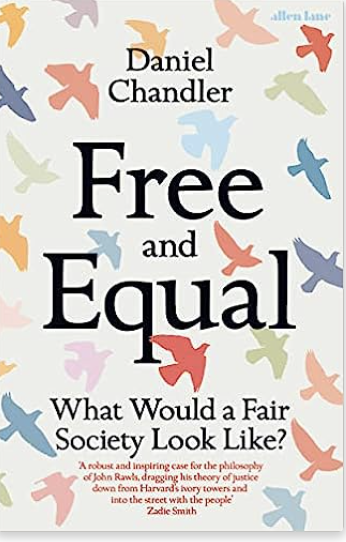

‘the old is dying and the new cannot yet be born’ (Antonio Gramsci)
Daniel Chandler trapt een open deur in als hij aan het begin van zijn nieuwe boek Free and Equal. What Would a Fair Society Look Like? stelt dat de burgers van rijke democratische landen niet in eerlijke samenlevingen wonen. Voor de meesten is het wel duidelijk, het politieke systeem wordt door rijken gedomineerd. Ze weten dat klasse, ras en geslacht nog steeds mogelijkheden beïnvloeden. Ze zijn zich bewust van de ongelofelijk ongelijke verdeling van geld, macht en prestige. Ze zullen zeggen dat klimatologische en ecologische veranderingen de eigen leefwereld en die van na ons bedreigen. Het vertrouwen in de politiek, die deze problemen zou moeten aanpakken, is naar een minimum gedaald en autoritair populisme bedreigt de democratische opbouw in verschillende landen. Wat volgens Chandler het meest ontbreekt in het politieke denken, daar zet hij wel een interessante deur open, is een constructieve en coherente visie op een betere en eerlijkere samenleving. Democratieën hebben zo’n ethische of ideologische onderbouwing nodig die burgers snappen, waar ze voor willen opkomen en die ze willen verdedigen. Daniel Chandler heeft dat raamwerk gevonden in het werk van de Amerikaanse politiek filosoof John (‘Jack’) Rawls. Begin jaren zeventig verscheen zijn Theory of Justice dat met Plato’s Republiek, Hobbes’ Leviathan en Marx’ Communistisch Manifest tot de grote werken uit de geschiedenis van de politieke ideeën behoort. Het boek Free and Equal dat Chandler erover schreef bestaat uit twee delen. In het eerste deel beschrijft hij heel inzichtelijk de complexe sociale, politieke en economische rechtvaardigheidstheorie van de politieke filosoof Rawls, in het tweede deel laat hij zien hoe Rawls ideeën gebruikt kunnen worden. Chandler wil een eerlijkere samenleving opbouwen en toewerken naar wat moreel wenselijk en praktisch mogelijk is. Rawls was de intellectueel die decennialang aan zo’n rechtvaardigheidstheorie werkte en zijn ideeën deelde met wetenschappers en studenten. Chandler wil dat ze gebruikt worden op straat, de media en de politiek. Hij wil dat ze ons denken veranderen, dat we er verkiezingen mee gaan winnen en gaan experimenteren met nieuwe politiek en aangepaste instituten.
Eerst gaat hij in op Rawls’ werk. Volgens Rawls bestaat er geen oorspronkelijk, natuurlijke of neutrale manier om een samenleving te organiseren. Onze democratie en instituten die we vormgeven zijn gebaseerd op menselijke keuzen en wij kunnen ze zelf veranderen. Democratie en instituten hebben we wel nodig om het allemaal goed te laten functioneren. Politieke structuren zijn daarbij nodig om tot collectieve beslissingen te kunnen komen. Juridische structuren zijn er om zaken te controleren en economische structuren zijn er voor productie en handel. Educatieve structuren zorgen voor de nodige onderbouwde informatie. Sociale structuren, tenslotte, zorgen ervoor dat de samenleving in stand wordt gehouden en cultuur gedeeld. Onze democratie en instituten vormen samen onze waarden, dromen en aspiraties en laten zien wat voor mensen wij zijn.
Wie willen we zijn? Rawls heeft een eerlijke en rechtvaardige samenleving voor ogen met een eenvoudige kern. Daarvoor moet jij jezelf niet alleen afvragen in wat voor een samenleving je zou willen wonen, tegelijk moet jij je voorstellen dat je niet weet wie je bent of later wordt. Je weet niet of je als rijk of arm persoon wordt geboren, ook niet als Christen, Moslim of atheïst. Je kent jouw seksuele geaardheid niet en of je wel of niet met fysieke of mentale beperkingen te maken krijgt. Rawls schotelt ons een soort denkexperiment voor, dat hij de ‘originele positie’ noemde. Je krijgt als het ware een ‘sluier van onwetendheid’ over je heen gelegd; je weet niet welk stuk van de taart je zult krijgen. Als we onszelf dan in zo’n positie hebben gemanoeuvreerd, vindt Rawls dat we twee principes in acht moeten nemen. Allereerst zullen we opkomen voor onze persoonlijke, politieke en procedurele vrijheden. Het gaat dan om de liberale rechten om te denken, zeggen en geloven wat je wilt, het stemrecht en de mogelijkheden om politieke processen te beïnvloeden. Dit is het ‘basis vrijheden principe’. Het tweede principe (‘eerlijke gelijkheid van mogelijkheden’) deelt hij op. Iedereen moet een gelijke kans krijgen om succes te hebben in het leven. Klasse, ras of geslacht mogen daarin geen rol spelen. Echter, en dat is interessant en anders dan wat we om ons heen zien, voegt hij daar een belangrijk tweede deel aan toe (‘verschil principe’). Van ongelijkheid kan alleen sprake zijn als het iedereen ten goede komt. Bij alles wat we doen, hebben we ons daarom af te vragen wat het betekent voor de minst bedeelden. We moeten alleen maar willen dat sommigen meer hebben als het mensen die weinig hebben ten goede komt. Je moet bij Rawls niet alleen aan inkomen en welvaart denken, maar ook aan economische macht en controle, en aan onderlinge relaties en zelfrespect. Naast deze principes hebben we verplichtingen naar toekomstige generaties (‘spaar principe’) en is het nodig dat we ons verantwoordelijk voelen voor hun materiele welvaart en vitale ecosysteem waar zij van afhankelijk zijn.
Chandler omarmt deze rechtvaardigheidstheorie maar wil dat het in onze tijd gebruikt wordt bij de problemen waar wij tegenaan lopen: vrijheid, democratie, gelijke kansen, welvaartsverdeling en betekenisvol werken. Vrijheden met betrekking tot seksualiteit, abortus, religie en het vrije woord zijn onderdeel van ‘culturele oorlogen’ geworden. Het is het persoonlijke strijd geworden en hier willen we onze eigen voorkeur boven die van de ander plaatsen. We willen gelijk krijgen en zijn vergeten te denken in meer publieke verschillen. Geen enkele basisvrijheid is het belangrijkste, het gaat om het geheel. Vrijheden kunnen alleen overleven als we redelijk, respectvol en tolerant naar elkaar toe zijn, als politiek met een beetje gevoel van eerlijkheid wordt gespeeld en als we er met elkaar uit willen komen. Daarom zijn het opbouwen van gedeelde waarden en burgerschap zo belangrijk.
Democratie is in gevaar nu er zoveel wantrouwen is en uiteindelijk zo weinig mensen betrokken zijn in het met elkaar beslissingen nemen. Democratie is het systeem dat bestaat bij het idee van politieke gelijkheid. Het is nodig dat iedereen gelijke mogelijkheden heeft om aan dat politieke proces mee te kunnen doen. Niet alleen via stemmen, maar ook is het nodig dat mensen gelijk geïnformeerd zijn en er in principe in gelijke mate aan besluitvorming kunnen deelnemen. Chandler doet concrete voorstellen om representatie en participatie te versterken en de invloed van geld terug te dringen zodat ook het democratische proces ten goede komt aan de minst bedeelden.
Banen en posities moeten verdeeld worden op basis van talent en iedereen heeft gelijke kansen nodig om die talenten te ontwikkelen. Dat kan door maatregelen in het onderwijs (door op jonge kinderen te investeren, door iedereen een brede basis mee te geven, door meer aandacht te geven aan het vakonderwijs bijvoorbeeld). Het kan ook door armoede en ongelijkheid te bestrijden en daarbij rekening te houden met klasse, ras en geslacht en verschillen die daarmee samenhangen.
Het is volgens Chandler ook goed om voorbij de voorwaardelijke welvaarstaat te denken en economische maatregelen te nemen die gedeelde welvaart ten goede komen. Daarom is het nodig ervoor te zorgen dat de levensstandaard aan de onderkant van de samenleving erop vooruitgaat. We zouden kunnen experimenteren met basisinkomen maar ook maatregelen die in een vroeg stadium ongelijkheid tegengaan zodat we dat niet achteraf hoeven te herstellen. Denk aan het verhogen van minimuminkomen, beroepstrainingen, versterken van de positie van vakbonden en andere maatregelen die ervoor zorgen dat het inkomen van mensen via werk erop vooruitgaan. Niet alleen het inkomen, ook het vermogen van mensen zouden eerlijker verdeeld moeten worden, bv via het instellen van burgerwelvaartsfonds waar iedereen vruchten van zou kunnen plukken. Politiek moet actief optreden tegenover de ongelofelijk oneerlijke concentratie van geld, macht en controle in de handen van aandeelhouders.
Tot slot is Chandler geïnteresseerd in bedrijfsvormen die meer onder controle staan van mensen die er werken en die de creativiteit, variëteit en autonomie van mensen ten goede komen. Meer democratie op de werkplaats vergroot de mogelijkheden van betekenisvol werk. Daarom zijn de rechten van de werknemers zo van belang. Daarom gaat zijn interesse uit naar meer medezeggenschap op het werk, naar vormen waarin de werknemers delen in de winsten en coöperatieve bedrijfsvormen.
Theory of Justice is een heel belangrijk politiek filosofisch boek. Toen het in de jaren zeventig uitkwam is het veel besproken en had het hoog aanzien. Het werd ook weer snel vergeten toen eind jaren zeventig het neo-liberalisme opkwam. Vanaf die tijd werd de nadruk gelegd op individualisme, ging het kapitalisme hoogtij dagen vieren en bouwden we de samenleving neo-liberaal op. De individualistische samenleving waar we met elkaar na 1980 in terecht zijn gekomen en die meer dan veertig jaar ons doen en laten bepaalde, zal Rawls verschrikkelijk hebben gevonden. De keerzijden van dat neoliberalisme zijn de laatste jaren duidelijker geworden en er wordt meer en meer afstand van genomen. Wat er voor in de plaats moet komen is nog onduidelijk. Het is goed dat Chandler ons nu zo overtuigend wijst op het belang van Rawls’ werk en wat het voor ons zou kunnen betekenen. In Rawls’ ‘redelijke pluralisme’ gaat het om samenwerking en wederkerigheid en het belang van families, gemeenschappen en het religie in ons leven. Gezonde samenlevingen hebben een stabiel perspectief, maar ‘stabiel vanwege de juiste redenen’ zoals Rawls schreef. Dan gaat het niet om een bepaalde manier van goed leven, daar komen we toch met elkaar niet uit. Het gaat om rechten die we elkaar gunnen en waar we ons aan houden. Van stabiliteit is op dit moment geen sprake en ons politieke denken gaat verschillende kanten op. We hebben behoefte aan een meer rustig evenwicht (‘reflectief equilibrium’) en Rawls’ idee van een humane, gelijke en duurzame samenleving zou dat kunnen zijn. Op deelterreinen zijn er vast betere boeken dan dit van Chandler. Wat dit boek zo sterk maakt is de coherentie en samenhang in denken over wie we zouden kunnen zijn.

Chandler, D. (2023). Free and equal. What Would a Fair Society Look Like? London: Allen Lane. 410 pagina’s.